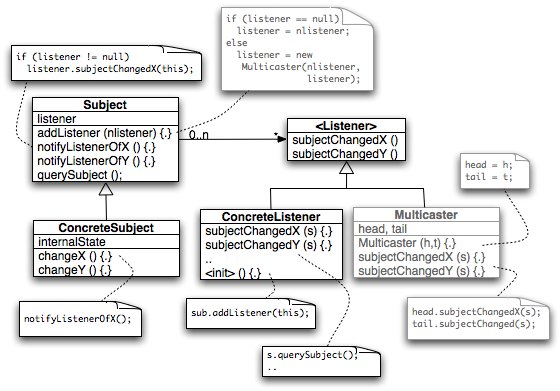
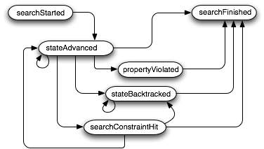

Beyond this basic Search-VM collaboration, there are numerous potential variations, e.g. to gather statistics, to monitor the state exploration progress, or to query details of states like field values. These are typical tasks for programs that use JPF, and add certain functionality on top of it (e.g. a graphical user interface). The goal is to provide an extension mechanism in JPF that enables adding such functionality without modifying Search or VM implementations

Figure 1: Listener pattern
The required extensibility is achieved by means of a Listener pattern (a Observer variant with a wide, change-topic specific notification interface), i.e. Listener instances register themselves either with the Search and/or the VM object (Subject), get notified when their corresponding Subjects perform certain operations, and can then interact with the Subject to query additional information, or even control the successive Subject behavior.
Changed facets of the Subjects are mapped into separate Observer methods, passing in the corresponding Subject instance as a parameter. As a implementation detail, Subjects keep track of registered listeners via so called MultiCasters (linked lists consisting of nodes implementing the listener interface), to avoid runtime costs for container traversal, which is suitable for high frequent notifications with small numbers of listeners.
Both interfaces reside in the general gov.nasa.jpf directory, hence we avoid using parameters which expose underlying Search or VM implementation constructs (like ThreadInfo etc.), and rely on Listeners residing in the right package to access detailed information by casting the Subject to its implementation class. In general, we avoid interface methods with varying degrees of specialization, i.e. don't provide several notifications based on the same event if
There are three different levels of Subject information retrieval by listener implementations:
SearchListener instances are used to monitor the state space search process, e.g. to create graphical representations of the state-graph. They provide notification methods for all major Search actions.
public interface SearchListener extends JPFListener { /* got the next state */ void stateAdvanced (Search search); /* state is fully explored */ void stateProcessed (Search search); /* state was backtracked one step */ void stateBacktracked (Search search); /* a previously generated state was restored (can be on a completely different path) */ void stateRestored (Search search); /* JPF encountered a property violation */ void propertyViolated (Search search); /* we get this after we enter the search loop, but BEFORE the first forward */ void searchStarted (Search search); /* there was some contraint hit in the search, we back out could have been turned into a property, but usually is an attribute of the search, not the application */ void searchConstraintHit (Search search); /* we're done, either with or without a preceeding error */ void searchFinished (Search search); }
For the standard depth first search (gov.nasa.jpf.search.DFSearch), listener implementations can assume the following notification model:

Figure 2: depth first search notification automaton
Using this interface, a sample application to log a generic search progress can be programmed like this
import gov.nasa.jpf.JPF; import gov.nasa.jpf.Transition; import gov.nasa.jpf.SearchListener; import gov.nasa.jpf.Search; public class TestClient implements SearchListener { /**************** main entry: driver ***************/ public static void main (String[] args) { TestClient listener = new TestClient(); Config conf = JPF.createConfig(args); // add your own args here.. conf.setProperty("jpf.print_exception_stack","true"); JPF jpf = new JPF(conf); jpf.addSearchListener(listener); System.out.println("---------------- JPF started"); jpf.run(); System.out.println("---------------- JPF terminated"); } /**************** SearchListener notifications *****/ public void stateRestored(Search search) { log( "restore ", search); } public void stateBacktracked (Search search) { log( "back ", search); } public void searchStarted (Search search) { System.out.println("search started"); } public void searchFinished (Search search) { System.out.println(" search finished"); } public void propertyViolated (Search search) { ErrorList errors = search.getErrors(); for (int i=0; i<errors.size(); i++) { System.out.println(?property violated: ? + errors.getError(i)); } } public void searchConstraintHit(Search search) { System.out.println("constraint hit:" + search.getConstraint(); } public void stateAdvanced (Search search) { log( search.hasNextState() ? "> " : "* ", search); } /**************** helper methods *************/ private void log (String prefix, Search search) { Transition trans = search.getTransition(); // acquire last transition // (list of executed insns) if (trans != null) { System.out.print(prefix); System.out.print(trans.getThread()); // get current thread number System.out.print(" "); System.out.print(search.getStateNumber()); // get unique state id System.out.print(" "); System.out.print(search.getSearchDepth()); // get current search depth System.out.print(" : "); System.out.println(trans.getLabel()); } } }
More elaborate examples of SearchListeners can be found in test/gov/nasa/jpf/tools, which also includes StateSpaceDot, a generator for GraphViz specific graph descriptions (Dot files) to generate state graph images.
VMListeners are used to follow the detailed VM processing, e.g. to monitor certain execution environment specific instructions (like Java IF instructions for coverage analysis, or PUTFIELD, GETFIELD instructions for potential race detections).
/** * interface to register for callbacks by the VM * Observer role in equally named pattern */ public interface VMListener extends JPFListener { /* JVM is about to execute the next instruction */ void executeInstruction (JVM vm); /* VM has executed next instruction (can be used to analyze branches, monitor PUTFIELD / GETFIELD and INVOKExx / RETURN instructions) */ void instructionExecuted (JVM vm); /* new Thread entered run() method */ void threadStarted (JVM vm); /* thread is waiting for signal */ void threadWaiting (JVM vm); /* thread got notified */ void threadNotified (JVM vm); /* thread got interrupted */ void threadInterrupted (JVM vm); /* Thread exited run() method */ void threadTerminated (JVM vm); /* new thread was scheduled by VM */ void threadScheduled (JVM vm); // might go into the choice generator notifications /* new class was loaded */ void classLoaded (JVM vm); /* new object was created */ void objectCreated (JVM vm); /* object was garbage collected (after potential finalization) */ void objectReleased (JVM vm); /* notify if an object lock was taken (this includes automatic surrender during a wait()) */ void objectLocked (JVM vm); /* notify if an object lock was released (this includes automatic reacquisition after a notify()) */ void objectUnlocked (JVM vm); /* notify if a wait() is executed */ void objectWait (JVM vm); /* notify if an object notifies a single waiter */ void objectNotify (JVM vm); /* notify if an object notifies all waiters */ void objectNotifyAll (JVM vm); /* garbage collection cycle started */ void gcBegin (JVM vm); /* garbage collection cycle finished */ void gcEnd (JVM vm); /* exception was thrown */ void exceptionThrown (JVM vm); }
VMListeners usually do reside in JPF implementation packages, and are mainly intended to be a internal, non-intrusive JPF extension mechanism, e.g. to provide additional information for specific Search implementations. The reason for this restriction is that VM is a very coarse abstraction of its potential implementors, and we do not want to "bubble up" abstration types of execution environment specific classes into the common gov.nasa.jpf package.
Listener configuration can be done in two ways: (1) per configuration file, and (2) dynamic:
(1) configuration file - the property 'jpf.listener' can be used to specify a colon separated list of listener class names:
jpf.listener=x.y.MyFirstListener:x.z.MySecondListener
The type of registration (SearchListener and/or VMListener) depends on the interfaces that are implemented by the specified classes. If a class implements both interfaces, the same instance will be registered automatically as a Search- and a VMListener.
(2) dynamic configuration - is usually done by applications that run JPF embedded:
MyListener listener= new MyListener(..); .. Config config = JPF.createConfig( args); JPF jpf = new JPF( config); jpf.addSearchListener(listener); jpf.addVMListene( listener); jpf.run(); ..
Most listeners tend to fall into three major categories: (a) system class (e.g. for logging), (b) complex properties, and (c) JPF debugging. The first category (a) is usually configured via the default.properties, (b) is configured with an application specific mode property file, (c) is specified via the command line ('+key=value' overrides).